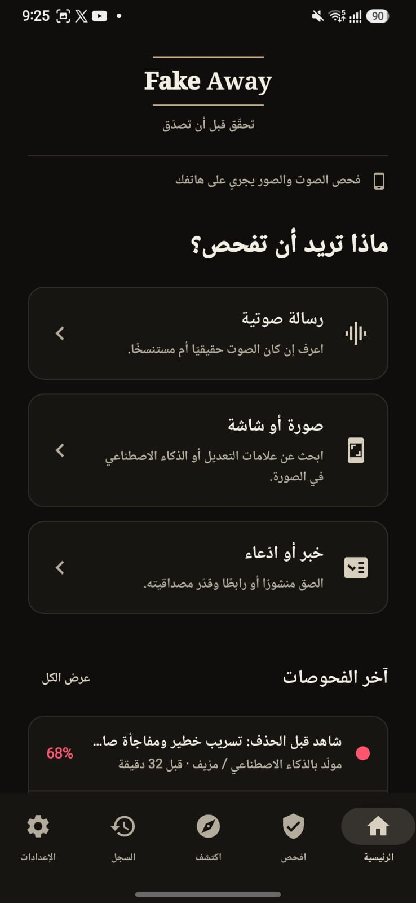
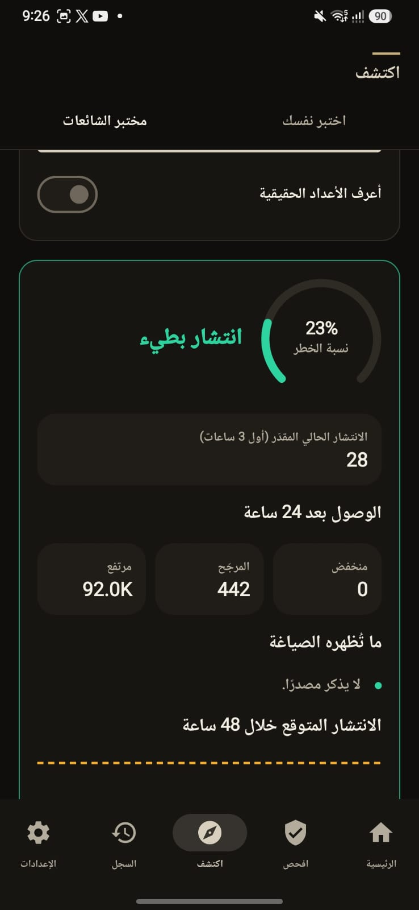
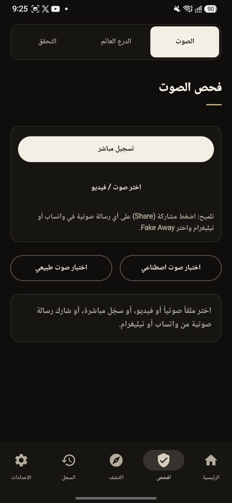
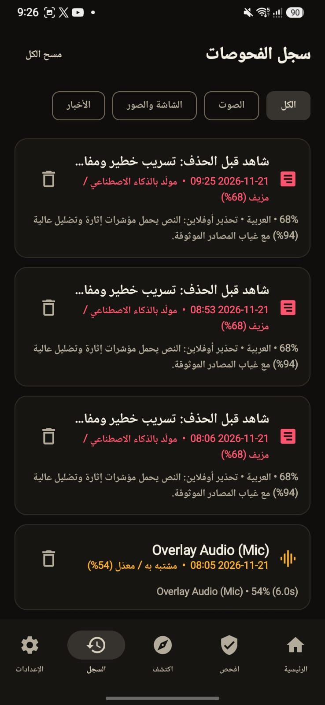
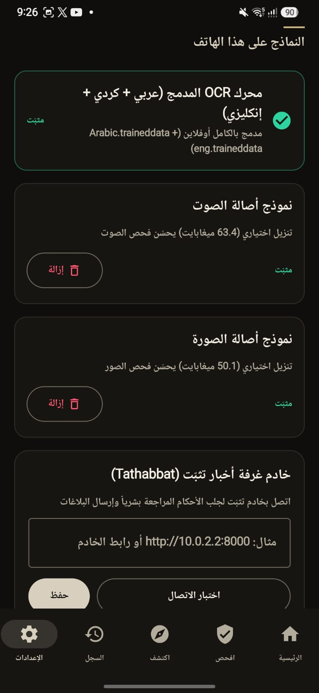
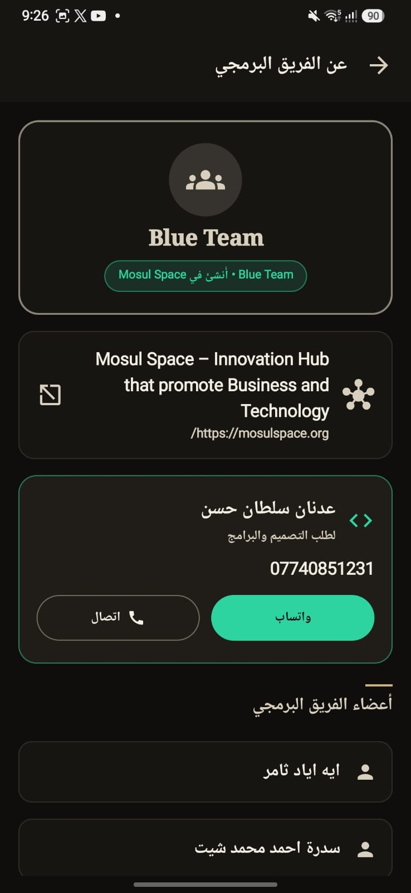
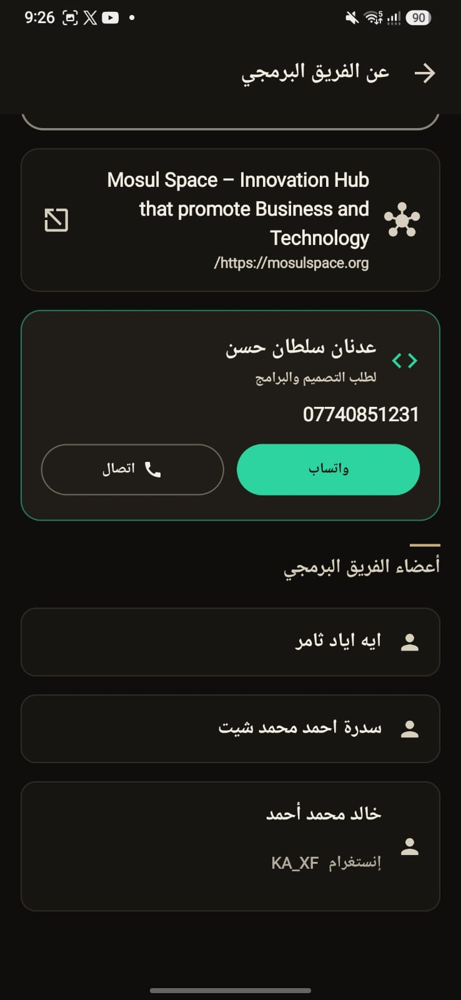

الرئيسية: ماذا تريد أن تفحص؟
وصول بضغطة واحدة إلى فحص رسالة صوتية، صورة أو شاشة، أو خبر وادعاء، مع عرض آخر الفحوصات وبانر الخصوصية المحلية.
منصة فحص ذكية متكاملة على هاتفك لكشف التزييف العميق في الرسائل الصوتية والصور والشاشات والأخبار، مع مختبر الشائعات، الدرع العائم فوق التطبيقات، وخادم غرفة أخبار تثبّت — مجاناً بالكامل وبخصوصية تامة.

تمت إعادة تصميم التطبيق بالكامل لتسهيل الوصول السريع من الشاشة الرئيسية إلى فحص الصوت والصور والأخبار، مع أدوات توعية وتحليل انتشار الشائعات.
وصول بضغطة واحدة إلى فحص رسالة صوتية، صورة أو شاشة، أو خبر وادعاء، مع عرض آخر الفحوصات وبانر الخصوصية المحلية.
سجّل مباشرة أو اختر ملف صوت/فيديو، أو شارك أي رسالة صوتية من واتساب وتيليغرام إلى Fake Away، مع أمثلة جاهزة لاختبار الصوت الطبيعي والاصطناعي.
تنقّل سلس بين الصوت والدرع العائم والتحقق داخل تبويب "افحص" لفحص الشاشة فوق التطبيقات والتحقق اللغوي من الأخبار.
تبويب "اكتشف" الجديد يقيس خطورة صياغة الخبر، ويحسب توقع الانتشار خلال 3 ساعات و24 ساعة و48 ساعة، مع اختبارات تفاعلية لتدريب المستخدم.
حفظ تلقائي لنتائج الفحص على الجهاز مع فلاتر سريعة (الكل، الصوت، الشاشة والصور، الأخبار) وعرض نسب الثقة والخطر.
قفل كامل على الشبكة عند الحاجة لتشغيل النماذج المحلية فقط، مع دعم اختياري للربط مع خادم غرفة أخبار تثبّت (Tathabbat).
لا يكتفي Fake Away بإعطاء نسبة خطر للخبر، بل يحلل ما تُظهره الصياغة اللغوية ويحسب التوقعات الرقمية للوصول خلال 24 ساعة ومنحنى الانتشار المتوقع خلال 48 ساعة.

فحص البصمة الطيفية وكشف الأصوات المستنسخة أو المولّدة بالذكاء الاصطناعي محلياً (63.4 MB).
كشف التلاعب البصري والصور المولّدة بالذكاء الاصطناعي من المعرض أو لقطات الشاشة (50.1 MB).
استخراج النصوص من الصور ولقطات الشاشة بالكامل أوفلاين (Arabic.traineddata + eng.traineddata).
تكامل مباشر للتحقق الهجين مع مصادر الأخبار عند توفر اتصال اختياري بالإنترنت.
الدليل الشامل ودليل المستخدم التطبيقي لتطبيق Fake Away وكشف فبركة الصوت والصور والأخبار.
اضغط على أي شاشة لتكبيرها واستعراض التفاصيل.
اختصارات الفحص السريع للصوت والصور والأخبار مع تنبيه الخصوصية.

تسجيل مباشر، اختيار ملف صوت/فيديو، وأزرار اختبار الصوت الاصطناعي والطبيعي.
قياس الخطر، توقع الوصول خلال 24 ساعة، ومنحنى الانتشار لـ 48 ساعة.

فلاتر الصوت والشاشة والأخبار مع نتائج الفحص السابقة ونسبها.

تبديل فوري بين العربية والإنكليزية والكردية وتفعيل الوضع الأوفلاين الصارم.

إدارة نموذج الصوت (63.4 MB) والصورة (50.1 MB) وخادم غرفة أخبار تثبّت.

Blue Team في Mosul Space مع رابط الحاضنة التكنولوجية.

معلومات المطورين وروابط التواصل المباشر عبر واتساب وإنستغرام.
شعار Fake Away الجديد الذي يدمج الدرع مع الموجة الصوتية ومصفوفة البكسل.